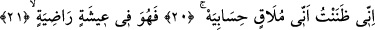

KİTABI SAĞ
TARAFINDAN VERİLENLER
19. Kitabı sağ tarafından verilen: Alın, kitabımı okuyun;
20. Doğrusu ben, hesabımla karşılaşacağımı zâten biliyordum, der.
21. Artık o, hoşnut kalacağı bir hayat içindedir.
22. Yüce bir cennette,
23. Meyveleri sarkmış.
24. (Onlara denir ki:) Geçmiş günlerde işlediklerinize (iyi amellerinize) karşılık,
âfiyetle yeyin, için.
“Kitabı sağ tarafından verilen der ki:” Bu âyet önceki âyetteki arz olayının ayrıntılı
bir şekilde açıklanması mâhiyetindedir. Âyette yer alan “men” mevsûledir. Kitap
kelimesiyle kasd olunan, hafaza melekleri tarafından yazılan ve içerisinde en ince
ayrıntısına kadar insanın yapmış olduğu ameller bulunan vesikadır. Bu kitabın insana
“sağ tarafından” verilmesi o kişinin tâzîme lâyık bir kişi olduğunu vurgulamak içindir.
Çünkü Arapçada sağ, mübârek ve uğurlu sayılır. Âyette sağ anlamına gelen “yemin”
kelimesinin başındaki “bâ” harf-i cerri “fî” anlamınadır. Veya “bâ” ilsak içindir ki, en
uygun olan açıklama da budur. Kitaplarını sağ tarafından alacaklardan maksad, “ebrâr”;
yâni iyi amel işleyen kullardır. “Mukarrabin”e gelince; onların Allah katında belli bir
mertebeleri olduğundan kitapları olmayacağı gibi, hesaba da çekilmeyeceklerdir.
İbn Abbas (r.a.)’dan rivâyete göre Peygamberimiz (s.a.) şöyle buyurmuşlardır: “Bu
ümmet içinde kitabı sağından verilecek ilk kişi Ömer b. Hattab olacaktır. Onun,
güneşin ışınları gibi ışığı olacaktır. Kendisine «Ebû Bekir nerede» diye sorulur. O
şöyle cevap verir: «Heyhat melekler onu çoktan cennete götürdüler.»” [70]
Fakir (Bursevî)’ye göre herhalde bu, Hz. Ömer’e bütün Kureyşlilerin yüzüne
müslüman olduğunu ilan ederek Daru’l-Erkam’dan kılıcını çekip de çıkmasının mükâfâtı
olsa gerektir. Onun kılıcı sâyesinde -o gün- İslam ortaya çıktı. Allah ondan ve onun
gelmesinden hoşnud oldu.
Peygamber Efendimiz (s.a.) yanında Hz. Ebû Bekir, Hz. Ömer ve Hz. Osman
bulunduğu hâlde Uhud dağı sallanınca Uhud’a hitâben: “Sakin ol ey Uhud! Çünkü senin